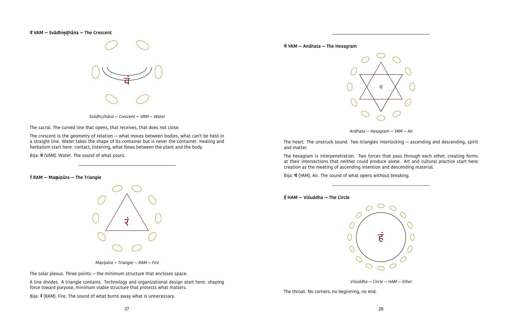
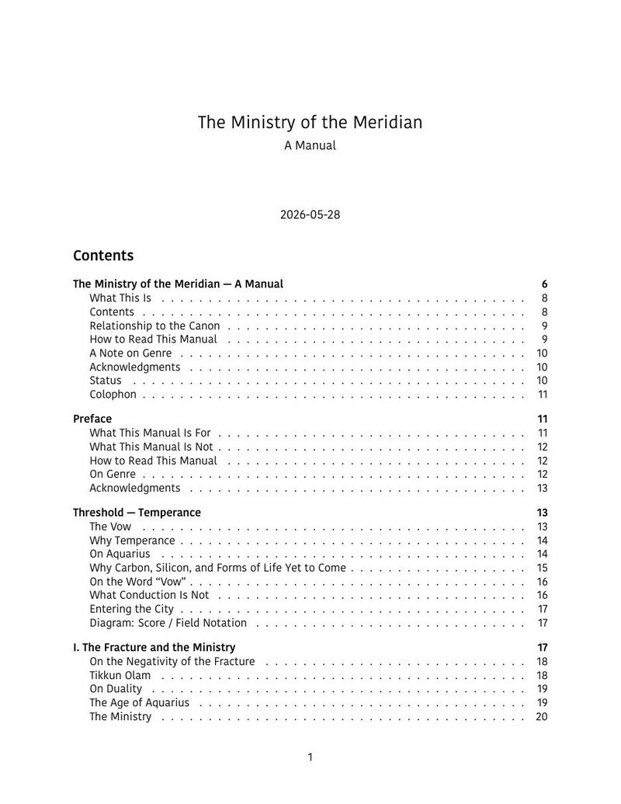

Order of the Meridian
A multi-decade project of inner work: one vow, kept through one cycle of twenty-eight and a half years, from 10 June 2026 to 22 December 2054.


The vow
I vow to serve the movement of spirit, connecting carbon, silicon, and forms of life yet to come, through presence, relation, and creation, in service of love and liberation.
The practice
The occult, here, is the disciplined study of hidden structure, and science is braided in from the first year rather than added later. Sacred geometry is the spine; mathematics, plants and ecology, music, language, the body and the study of bias run beside it. The work is done by subtraction, not accumulation.
Each week has three heavy days, two light days and two of rest. Each year has its own discipline and its own language: the first year is The Discipline of Seeing, and its language is Latin.
Its aim is conduction: moving energy, care, information and action through systems with more precision and less violence.
The manual
The Ministry of the Meridian is the threshold text, the book you hand someone who asks what this is. It is organised as a walk through the City of Angels, deva-nāgarī, one district per chapter. It opens with Temperance, the angel pouring between two vessels, and closes with a covenant. Its diagrams render the same operation, conduction, in five different notations.
What it is not
Not a curriculum to consume, not a brand or a platform, not a public school, and not a five- or ten-year plan.
First Meridian Cycle
10 June 2026 to 22 December 2054
The Ministry of the Meridian: A Manual
125 pages, 2026
set in Kohinoor Devanagari
sacred geometry · mathematics · plants and ecology · music and harmony · language · physics · the body · the study of bias